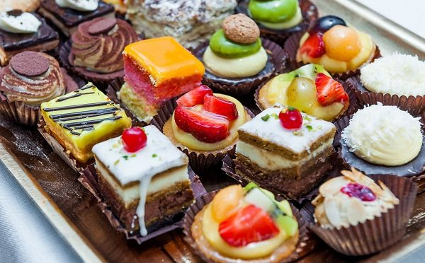

Немного о важном
Про меня
Не очень люблю рассказывать о себе, поэтому расскажу про то, что действительно важно.
Про них
Любите ли Вы пирожные так как люблю их я?
Они затейливо украшены ягодами и цукатами, припорошены цветной посыпкой и тонут в облаках крема. Мало кто устоит перед соблазном отведать хотя бы кусочек, а потом ещё один и ещё.
Это не только прекрасный десерт, но и Ваш билет в страну вкусовых наслаждений!
Что же это на самом деле?
Пирожные – небольшие по размеру кондитерские изделия, которые готовят из теста с добавлением сахара, начинки и крема. Видов пирожных существует огромное множество, а новые кулинарные технологии позволяют создавать новую рецептуру ежегодно.
Всем известны следующие названия пирожных и разновидности:
- Заварные эклеры,
- Медово-ореховые пирожные,
- «Картошка»,
- Суфле,
- Пирожные «Птичье молоко»,
- Корзиночки с ягодами и взбитыми сливками,
- Безе,
- Тирамису,
- Бисквитные пирожные,
- Шоколадные,
- Трубочки вафельные с кремом,
- Макарони.
Хотите узнать о них подробнее? Раздел «О нас» ждет!
